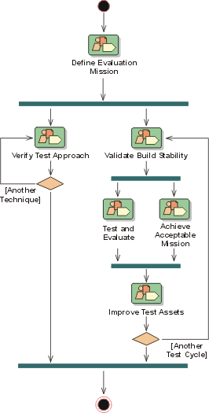
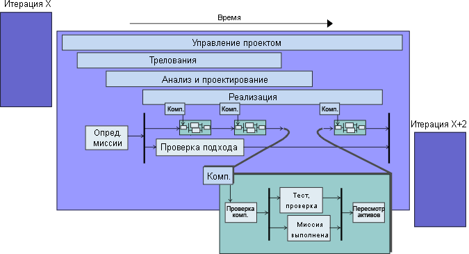

|
Разработка программного обеспечения в RUP - это циклический процесс. Жизненный цикл тестирования наилучшим образом
реализуется как процесс со многими итерациями. В каждом цикле итераций коллектив разработчиков программного обеспечения
создает промежуточную версию компоновки, которая является потенциальным кандидатом для тестирования.
Цели и акценты разработчиков меняются в разных циклах итерации. Согласно этому должны строить свои планы и участники
коллектива тестирования. Мы рекомендуем ограничивать до минимума усилия по планированию, а там, где они необходимы,
привязывать их точно ко времени, когда они потребуются. Также мы рекомендуем планировать тестирование только для
ближайшей итерации.
Для каждой компоновки в тесты будут вноситься добавления и уточнения, и что-то будет удаляться. Некоторые из тестов
будут неизменными и будут включаться в комплект тестов, применяемый при тестировании каждой компоновки в жизненном
цикле. При таком подходе тесты изменяются и уточняются, как и само программное обеспечение. Нет никакой фиксированной
спецификации программного обеспечения, и сами тесты тоже не фиксированы. На рисунке показана схема развития тестов во
времени.

Этот подход на основе итераций и архитектура на основе компонентов особенно подчеркивают целесообразность
регрессионного тестирования качества продукта для каждого цикла компоновки. Все тесты, разработанные для версии X,
являются потенциальными кандидатами для регрессионного тестирования версии X+1, X+2 и т.д. Когда тест повторяется
несколько раз, возможно, его следует автоматизировать. Автоматизированное тестирование позволяет выполнять сценарии при
повторном тестировании и переключать сотрудников на работу с тестированием новых функций.
Рассмотрим только жизненный цикл тестирования, пока не обращая внимания на остальные части проекта. На рисунке показана
структура различных задач дисциплины тестирования в заданной итерации.

Жизненный цикл следует циклу итераций, согласно которому ведется разработка. Итерация начинается с того, что коллектив
тестирования уточняет у руководителя проекта и прочих заинтересованных лиц наиболее важные задачи тестирования будущей
версии. В этом участвуют почти все участники тестирования.
Обычно каждая итерация содержит не менее одного цикла тестирования, как показано на рисунке. Очень часто в ходе одной
итерации выполняется несколько компоновок, и цикл тестирования связан с этими компоновками. Иногда компоновки могут не
включаться в тестирование.
Наряду с общим процессом тестирования часть коллектива тестирования может быть занята поиском новых методик
тестирования. Такой подход обеспечивает надежность методик тестирования, особенно в последующих итерациях.

Жизненный цикл тестирования является частью жизненного цикла программного обеспечения, и они должны быть
синхронизированы друг с другом. Проектирование и разработка тестирования может быть столь же сложной и трудоемкой
задачей, как и разработка самого программного продукта. Если не выполнить тестирование вместе с первыми выпусками
программного обеспечения, то многие неполадки будут обнаруживаться на более поздних стадиях разработки. Часто
вследствие этого выпуск продукта откладывается из-за долгого периода исправления ошибок программы, что практические
сводит на нет преимущества итеративной разработки.
Даже если планирование тестов и определение задач могут выявить ошибки или просчеты на ранних этапах постановки задач,
мы рекомендуем заранее планировать все процедуры тестирования. Помимо уже упомянутой возможности повторного выполнения
задач, коллектив тестирования должен очень внимательно относиться к тому, чтобы выступать в роли беспристрастных
советников, а не карательных органов в отношении проектирования на ранних этапах. Работа проектировщиков на ранних
этапах неизбежно будет содержать ошибки. Если коллектив тестирования будет предъявлять необоснованные требования к
качеству этой работы, он рискует быть отторгнутым остальной частью разработчиков.
Неполадки, выявленные в цикле итерации, могут быть устранены в том же цикле или отложены на будущее. Это решение
принимает руководитель проекта. Одной из важных задач для коллектива тестирования и руководителя проекта является
определение того, насколько выполнены цели итерации, сформулированные в плане итерации. С каждой итерацией выполняется
анализ соответствия требованиям. Это непрерывный процесс, и к этому нужно быть готовым.
Выполнение тестов зависит от ряда факторов:
-
область приложения
-
бюджет
-
стратегия компании
-
приемлемость рисков
-
персонал
Затраты на тестирование будут зависеть от того, как выполняется оценка качества и расчет факторов риска в конкретной
среде.
|